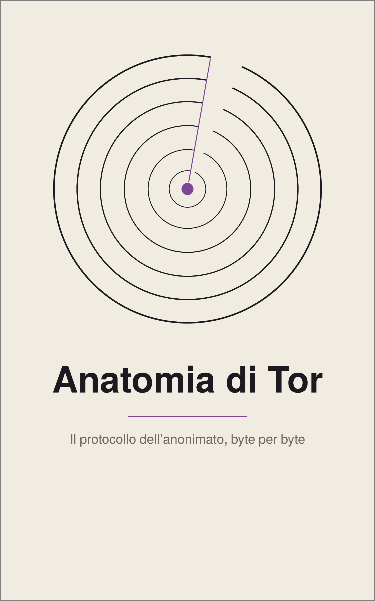

Anatomia di Tor
Il protocollo dell'anonimato, byte per byte
Un libro tecnico su come funziona Tor: parte dai byte che due relay si scambiano e risale fino alle scelte di progetto, agli attacchi reali e ai problemi ancora aperti. Ogni meccanismo viene ricostruito e provato in laboratorio, su una rete Tor privata che gira su un normale computer.
Il libro è gratuito, e i suoi sorgenti — testo, figure, codice e laboratori — sono aperti a tutti con licenza GNU GPL.
Scaricare il libro
Prima edizione in italiano, versione 1.0.0, 298 pagine. Tutti i file e le impronte SHA-256, compreso il PDF 7×10 per stampare una copia personale. Sono disponibili tutte e cinque le edizioni: scarica le traduzioni (non revisionate linguisticamente da esperti indipendenti). · DOI
Esplora
- La storiaDalla tesi triennale al libro.
- Il libro31 capitoli, dalle celle ai problemi aperti della ricerca.
- LaboratoriVenti esperimenti su una rete Tor privata.
- LingueL'originale italiano e quattro traduzioni in revisione.
- Trasparenza AIChi ha fatto che cosa: direzione umana e strumenti di AI.
- LicenzaChe cosa permette la GNU GPL.
Aiuta a migliorare il libro
Quest'opera è libera e aperta ai contributi. Un refuso, una spiegazione poco chiara, un errore tecnico o un laboratorio che si comporta diversamente da quanto descritto: ogni segnalazione aiuta a migliorare il libro.